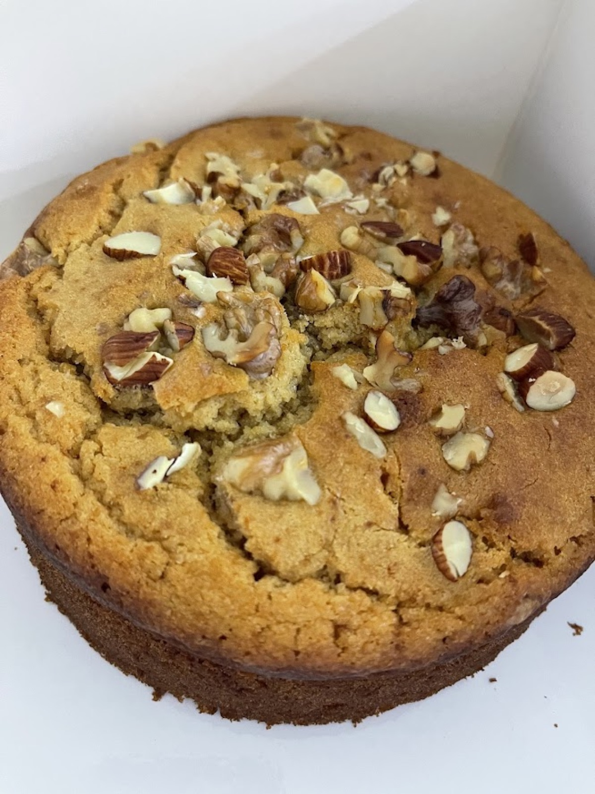

Soft, simple, and a little uneven in places — the kind of cake that feels like the beginning, because it is. The first one Vedhica baked, for her dolls.

Ask a grown-up to turn the oven to 180°C and grease a cake tin.
Mix the butter and sugar together until it looks pale and fluffy. Add the eggs one at a time, then stir in the vanilla.
In another bowl, mix the flour, baking powder, and salt. Add this to the butter mixture a little at a time, along with the milk, and stir just until it's all combined — no need to overdo it.
Pour the batter into the tin and pop it in the oven for 30 to 35 minutes, until a toothpick comes out clean. Let it cool before you touch it, however hard that is to wait for.